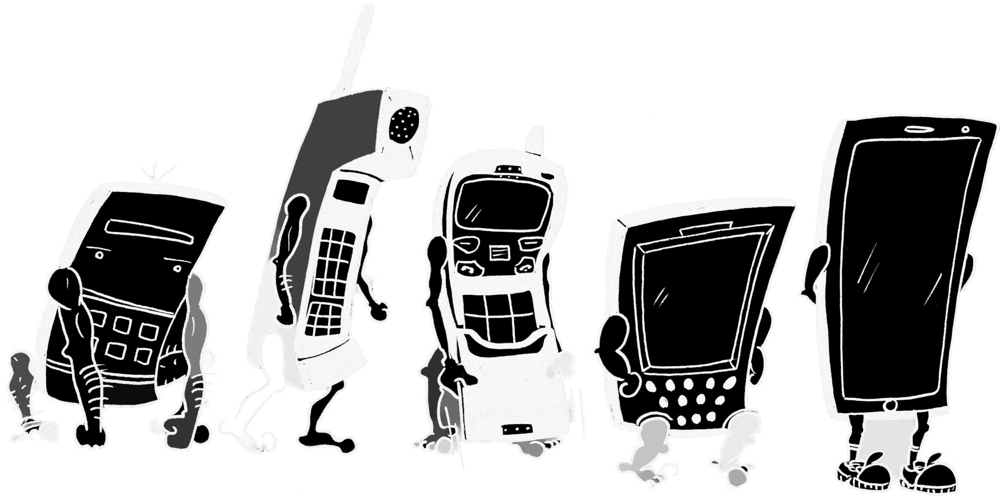
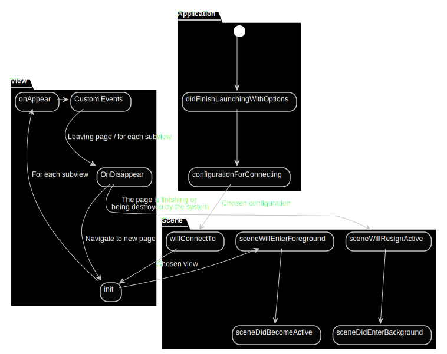
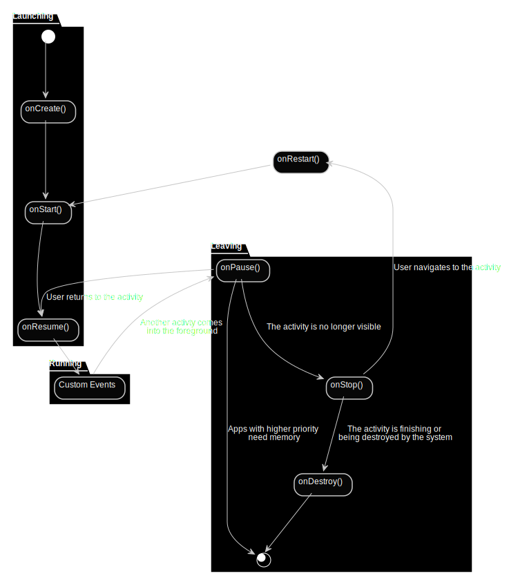
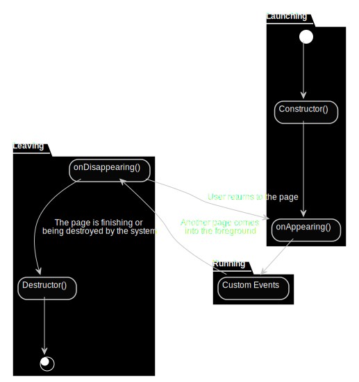

Technik und Architektur
Ein paar Zahlen…
Ein Blick in die Glaskugel…
Software is eating the world
Mark Andreessen

Gemeinsame Strategie
Viele der bedeutensten Unternehmen setzen (zukünftig) auf Programmiersprachen und Frameworks für Backend und alle Frontends (Desktop, Web und Mobile)
- Apple: Swift und SwiftUI
- Microsoft: C# und MAUI
- Alphabet: Kotlin und Jetpack Compose bzw. Dart und Flutter
- Facebook: JavaScript und React Native
Mobile is eating Software…
Historie mobiler Endgeräte

Sharp QT-8B micro Compet (1970)
Erster Rechner mit Batterieversorgung
Busicom Handy LE (1971)
- Früher Taschenrechner kleiner Bauart
- Arithmetische Operationen berechnet durch einzelnen Chip: Mostek MK610
Osborne 1 (1981)
- Erster „tragbarer“ Computer
- Gewicht fast 12 Kilogramm
- 5‘‘ Bildschirm
Ubiquitäre Systeme (1991)
- Formfaktoren: Tabs, Pads, Boards
- Eingebettete Systeme die selbstständig auf Umwelt reagieren
- Ortung
- Sensorik
- Drahtlose Vernetzung
Nokia Series 40 (1999)
- Über 1,5 Milliarden verkaufte Geräte mit Series 40
- Nach Microsofts Übernahme von Nokias Handysparte eingestellt

RIM BlackBerry 5810 (2002)
- Erste Kombination von Telefonie und PDA (Smartphone)
- BlackBerry hat inzwischen extrem an Bedeutung verloren
iOS (2007)
- Gemeinsame Basis mit macOS (Darwin)
- Betriebssystem für
- iPhone
- iPad
- iPod Touch
Android (2008)
- Angepasster Linux Kernel
Was bedeutet “Mobile” heute?
- Mobil
- Vernetzt
- Kontextuell
- Einfach
Weitere Eigenschaften
- Gute User Experience
- Hohe Innovationsgeschwindigkeit
- Viele integrierte Fähigkeiten
- Soziale Interaktion
- Lange Akkulaufzeit
- Sofortige Verfügbarkeit
- Ständige Konnektivität
- Sensoren und Kontextinformationen
- Apps
Abgrenzung

Besonderheiten bei mobilen Endgeräten
Oberflächengetriebene Konzeption und Entwicklung
- Entwicklung mobiler Apps ist stark oberflächengetrieben
- Usability steht im Vordergrund
- Möglichst nahtloses und passgenaues Einfügen in die Erlebniswelt des Benutzers (User Experience (UX))
Nutzungsgewohnheiten
- Nutzung überall
- Dringende Aufgaben
- Wiederholte Aufgaben
- Echtzeitaufgaben
- Kurze und wiederholte Nutzung
Multi-Touch-Displays
- Im Vergleich zu Notebooks und stationären Computern kleine Displays
- Andere Interaktionsmöglichkeiten (Touch)
- Verfügbarkeit von Gesten
Hardware- und Software-seitige Fragmentierung
- Variierende Hardware-Komponenten
- Unterschiedlichen Konfigurationen und Displayygrößen
- Verschiedene mobile Betriebssysteme und Betriebssystemversionen
Ressourcen
- Je nach Markt eingeschränkte Hardwareressourcen
- Schwankende Netzverfügbarkeit
- Plötzliche Verbindungsabbrüche
- Unterbrechungsmöglichkeiten (z.B. eingehender Anruf)
Sensoren und Aktoren
- Beschleunigungssensor
- Gyroskop
- GPS-Sensor
- Magnetfeldsensor
- Kamera
- Mikrofon
- Helligkeitssensor
- Annäherungssensor
- Voltmeter
- Vibrationsaktor
Auswahl weiterer Sensoren
- Barometer
- Hygrometer
- Pulsmesser
- Thermometer
- Eye-Tracker
- Fingerabdrucksensor
Moderne Programmiersprachen
Programmierparadigmen
Programmers who program “in” a language limit their thoughts to constructs that the language directly supports. If [they] are primitive, the programmer’s thoughts will also be primitive. Programmers who program “into” a language first decide what thoughts they want to express, and then they determine how to express those [with] their specific language.
Steve McConnell
Objektorientierung
- Abstraktion von Daten und darauf arbeitenden Funktionen und Methoden
in einer Struktur (Klassen und Objekte)
- Swift erlaubt dies auch außerhalb von Klassen!
- Modellierung von Spezialisierungshierarchien (Vererbung)
Funktionale Programmierung
- Im Zentrum stehen Funktionen, die Eingaben in Ausgaben transformieren
- Funktionen können Eingabeparameter und Rückgabewerte sein (Funktionen höherer Ordnung)
Scripting
- Verzicht auf Overhead
- Typinferenz
- REPL Umgebungen
Null Safety
„I call it my billion-dollar mistake. It was the invention of the null reference in 1965. […] This has led to innumerable errors, vulnerabilities, and system crashes, which have probably caused a billion dollars of pain and damage in the last forty years.”
Tony Hoare
Ereignisgesteuerte Programmierung
iOS

Android

MAUI
